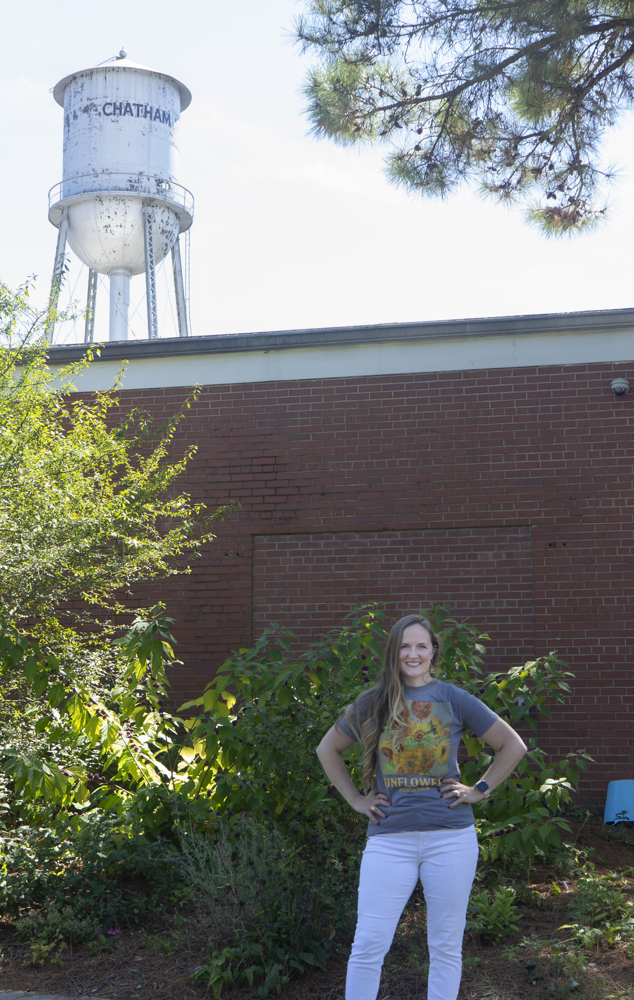

The town of Pittsboro Water Treatment Plant is where water drawn from the Haw River is filtered and distributed to the town. The town commissioners approved a new filtration system that would sort out some industrial contaminants. [Mackenzie Wilkes]
Soluble Solutions
Experts and town of Pittsboro residents, officials search for solutions to upstream water pollution contaminating drinking water
PITTSBORO, NC — Jessica Merricks moved to Pittsboro in 2019 after she and her husband saved money to buy a home. She had just gotten a job in Elon, her husband works in Raleigh and they wanted to buy their first home in a town between the two where they could raise their daughter. But then came a letter in the mail.
In October 2019, Merricks received a notice in her water bill informing residents that unregulated contaminants had been detected in the town’s drinking water. These contaminants, 1,4 dioxane and perfluoroalkyl substances also known as PFAS, were coming from upstream discharges.
"Not being from an area, you do all your research, right? Well, what's the crime like? What's the general feel of the community?" Merricks said. "Nobody goes and thinks about 'Well, am I gonna be able to drink the water?”
PFAS are industrial contaminants known as forever chemicals. They’re a group of man-made chemicals used in food packaging, and household products such as polishes and waxes, according to the U.S. Environmental Protection Agency. The EPA doesn’t have a maximum contaminant level that regulates and enforces how much PFAS can be in drinking water. However, it does have a health advisory level set at 70 parts per trillion.
PFAS can get into drinking water through industrial processes when wastewater gets into the drinking water supply. The Haw River is Pittsboro’s drinking water supply, and upstream wastewater pollution has spilled industrial contaminants into the river.
PFAS and other industrial contaminants pose some health risks such as low infant birth weights, immune system deficiencies, cancer and thyroid problems.
1,4 dioxane is used as a solvent in adhesives sealants and is a likely human carcinogen, per the EPA. There is no maximum contaminant level for 1,4 dioxane, but a health advisory suggests that drinking of the substance shouldn’t exceed 4 milligrams per liter a day.
So, the Merrickses did what they could to protect themselves. Merricks’ and her husband educated themselves on the contaminants and installed water filters in their home. But, it dawned on Merricks that she just couldn’t concern herself with the water in her house but everywhere her family went in Pittsboro.
“All the public schools use city water, right? Most of the day cares use city water,” Merricks said. “And it's just the more I thought about it, the more I realized, look, I can't protect [my daughter] by just focusing on my house. We have to think about everywhere we go, where are we getting our water from?”
Jessica Merricks is the co-founder of Clean Haw River. After moving to Pittsboro in 2019, she began advocating for clean water when she realized her family had to be skeptical of the water wherever they go in town.[Mackenzie Wilkes]
Aware of the broader implications of the town’s contaminated drinking water, Merricks co-founded the organization Clean Haw River in 2020 alongside Katie Bryant. The goal of the organization is to not only inform people of the drinking water contamination but to advocate for change. Bryant, a former microbiologist in the vaccine and cosmetic industries, has dedicated herself to learning about industrial contaminants.
“Unfortunately, you have to be an expert in your field, sometimes even understand at all, [or] fully understand the subject. I would say, there's a ton of barriers,” Bryant said.
Bryant was a member of the Pittsboro Water Quality Task Force formed in November 2019. The citizen composed task force culminated with a report in October 2020 with three key recommendations: develop a response plan with upstream cities, assess water infrastructure options and generate public awareness.
Searching for solutions
One long-term solution the town is pursuing is installing an enhanced water filtration system at the town’s water treatment facility. The Pittsboro Board of Commissioners approved $2.6 million for the installation of a water treatment system.
The town has hired CDM Smith, a consulting engineering and contractor, for the installation. An assessment of three water treatment systems was done by CDM Smith. A combined granular activated carbon filter (GAC) and ion exchange water treatment were determined to be the most cost effective solution that meets the town’s treatment goals, according to CDM Smith.
While the GAC and IX filter system removes 90% of PFAS from the water, according to CDM Smith study, it can’t filter out emerging contaminants like 1,4 dioxane. The CDM Smith study found that UV advanced oxidation process (UV- AOP) was effective at removing 90% of 1, 4 dioxane and extends the life of the GAC filter.
The study, conducted between March and October 2020, found that levels of 1,4 dioxane were decreasing in the town’s water, but recommended adding UV-AOP if levels begin to rise again.
And levels have once again started to rise. North Carolina Department of Environmental Quality announced on July 1 that the city of Greensboro discharged 1,4 dioxane into South Buffalo Creek from T.Z. Osbourne wastewater treatment plant. The discharge from this plant flows downstream and affects the drinking water supply of Pittsboro.
For Bryant, one long-term solution to water contamination in Pittsboro is to implement higher water quality standards at the federal level in order to regulate and closely monitor these contaminants.

Katie Bryant is the co-founder of Clean Haw River and has been a Pittsboro resident since 2011.[Mackenzie Wilkes]
“You'd have state and federal standards of what could be in our water, then on top of that, we… should have some federal robust monitoring,” Bryant said. “So here what would be required of our facilities to monitor and test for more laboratories to test for things so more checking like, we have an emerging problem here that's kind of going under the radar.”
Emily Sutton is the riverkeeper for the Haw River Assembly. Her job is to monitor, maintain and advocate for the health of the river. The Haw River Assembly recently held a community forum discussing the water issue. She said residents are concerned about the issue, but are having to rely on organizations such as there for information and action.
“A lot of their response has been kind of relying on groups, like our group Haw River Assembly, to stop this issue at the source through legal action work and litigation with Burlington and city of Greensboro,” Sutton said. “But even if that's the only pathway, the only solution, that's going to take years. It's not going to be something that happens overnight. And then in the meantime, we've got thousands of community members who are drinking this water every single day.”
After the Southern Environmental Law Center intended to sue the city of Burlington in 2019 on behalf of the Haw River Assembly, an agreement was reached in 2020 requiring Burlington to investigate the sources of PFAS and 1,4 dioxane coming from the city and transparency about the process.
The SELC is also currently petitioning the North Carolina Department of Environment Quality and the North Carolina Environmental Management Commission on behalf of the Haw River Assembly regarding an agreement the groups made with the city of Greensboro.
The agreement requires Greensboro to monitor and report out sampling results. The petition argues that the order doesn’t apply water quality laws and regulations to the city.
The SELC’s legal actions in Burlington and Greensboro don’t point to specific industries in these cities as the cause of the contamination in the wastewater, but other legal action in the state points to industries causing PFAS contamination.
North Carolina Attorney General Josh Stein launched an investigation into PFAS contamination in August 2020 which included a lawsuit against chemical companies the Chemours Company and EI Dupont de Nemours. Dupont formerly owned and operated Chemours, who owns and operates Fayetville Works, a manufacturing facility where PFAS contaminants were found. This contamination, however, would impact the lower Cape Fear River system. The Haw River is a tributary of this system but the river and Pittsboro is located north of Fayetville and the Cape Fear River. PFAS contaminants in Pittsboro’s water is coming from upstream.
For some residents like Suzanne Davis, there’s little hope that the problem will be mitigated. Davis and her husband are North Carolina natives from Chapel Hill who moved to Pittsboro when they retired in 2016. She said her family was lucky to have emergency funds to install a water filtration system, but doesn’t have hope that action will come soon.
“My husband and I do not have much hope for a small town to fight industries that have kept water protection laws low on the list of our state’s elected officials’ priorities,” Davis said. “In fact, knowing how slowly this issue will resolve, if it ever does, we have installed a water purification system in our home.”